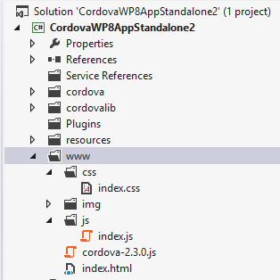

Windows Phone 7 Platform Guide
This guide shows how to set up your SDK development environment to deploy Cordova apps for Windows Phone 7 devices. Apps also run on Windows Phone 8 devices using the same APIs, but version 7 lacks some of IE10's advanced features available on Windows Phone 8. Windows Phone 8 apps do not run on Windows Phone 7 devices.
See the following for more detailed platform-specific information that applies to both versions:
The command-line tools above refer to versions prior to Cordova 3.0. See The Command-Line Interface for information about the current interface.
System Requirements
Use Windows 7 or Windows 8 (Pro) or Windows Vista with SP2. The 64-bit version (x64) of Windows is required for the SDK. The Pro version is recommended for running a device emulator.
Register and pay for a Windows Phone Dev Center account if you want to install an app on a real device or submit it to Market Place.
NOTE: Running the SDK in Virtual Machine may present challenges. Read Windows Phone on a Mac for insights on developing solutions.
Install SDK and Cordova
Download and install the Windows Phone SDK.
Download and extract the latest copy of
Cordova. You need to work in the
lib\windows-phone-8\wp7 subdirectory, lib\windows-phone-8\wp8
contains the Windwos Phone 8 version of Cordova.
Copy the CordovaWP7_x_x_x.zip file to the \My Documents\Visual
Studio 2012\Templates\ProjectTemplates\ directory.
Building the Template
NOTE: Skip this step if the lib\windows-phone directory already
contains a CordovaWP7_x_x_x.zip file.
To simplify development, Cordova bundles a script to build Visual Studio templates. These allow you to rapidly generate Cordova apps, and you can modify them if necessary. The steps below show how to generate it.
Run the Batch File to Create and Install the Templates
The root of the repo contains a createTemplates.bat file.
Double-clicking this file generates two .zip files:
CordovaWP7_x_x_x.zip and CordovaWP8_x_x_x.zip, where 3.3.0 is
the current version number. To use these files easily in Visual
Studio, copy them to the My Documents\Visual Studio
2012\Templates\ProjectTemplates\ subdirectory. You are then able to
create new Apache Cordova Windows Phone_ apps from Visual Studio's
__File → New Project menu.
If you run the batch file from the command line, you can also call with a parameter to install automatically:
>createTemplates.bat -install
Set up a New Project
Open Visual Studio Express for Windows Phone and choose New Project.
Select CordovaWP7. The version number displays in the template description.
Give the project a name, and select OK.
Review the Project Structure
The www directory features html, js, and css subdirectories
and any other resources your app requires.
Any additional content needs to be a part of the Visual Studio
project, and it must be set as content.
The following sample structure represents a 2.3.0 project, but may vary depending on installed version:

Build the Project for the Device
Before testing your application on a device, the device must be registered. Consult Microsoft's documentation.aspx) for details on how to deploy and test on Windows Phone 7. These are the basic steps:
Make sure your phone is connected, and the screen is unlocked.
In Visual Studio, select Device from the drop-down menu at the top.
Press the green play button next to the main drop-down menu to start debugging, or else type F5.

At this point, you're done.